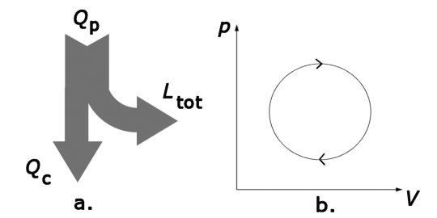
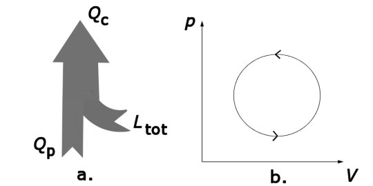
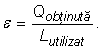
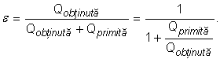
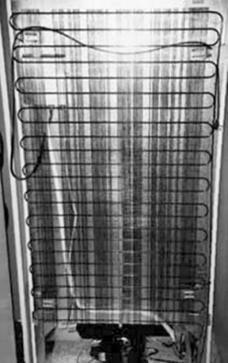

Provocarea 3-1
Provocarea 3-1
Ce te aştepţi să se întâmple dacă ciclul ar fi parcurs în sens invers?
Elemente de termodinamică. |
Motoare termice |
G-3. |
Pompa termică şi frigiderul |
Motoarele termice transferă lucru mecanic mediului pe seama energiei primită sub formă de căldură de la acesta (figura 3−1a).

Figura 3−1. a. Transformări ale energiei într−un motor termic.
b. Un ciclu termodinamic tipic al unui motor termic.
În destinderile de pe parcursul ciclului termodinamic, motorul efectuează mai mult lucru mecanic decât în compresiile de pe parcursul ciclului: în coordonate p−V ciclul este parcurs în sensul acelor de ceas (figura 3−1b).
Provocarea 3-1
Ce te aştepţi să se întâmple dacă ciclul ar fi parcurs în sens invers?
Dacă ciclul ar fi parcurs în sens invers, s−ar inversa toate transferurile de energie! (figura 3−2).

Figura 3−2. Inversarea sensului parcurgerii ciclului
conduce la inversarea tuturor transferurilor de energie.
Aceasta înseamnă că motorul "inversat" trebuie să i se transfere lucru mecanic net, dar va prelua energie sub formă de căldură dintr−o zonă rece şi o va transfera într−o zonă cu temperatură mai mare! Motorul inversat devine o "pompă" care determină trecerea energiei sub formă de căldură dintr−o zonă rece într−una mai caldă.
 Numim pompă termică o maşină care transferă energie sub
formă de căldură de la o zonă mai rece către una mai caldă, utilizând energie sub formă de lucru mecanic.
Numim pompă termică o maşină care transferă energie sub
formă de căldură de la o zonă mai rece către una mai caldă, utilizând energie sub formă de lucru mecanic.
Scopul utilizării unei pompe termice este să încălzim zona mai caldă. Pentru aceasta trebuie utilizată energie sub formă de lucru mecanic. Suntem interesaţi să obţinem cât mai multă energie sub formă de căldură, utilizând cât mai puţină energie sub formă de lucru mecanic.
Numim eficienţa unei pompe termice raportul dintre cantitatea
de căldură obţinută în zona mai caldă şi lucrul mecanic utilizat:

Dacă pompa fucnţionează ciclic, variaţia energiei sale interne este nulă. Conform principiului I al termodinamicii, lucrul mecanic utilizat este egal cu cantitatea totală de căldură schimbată de pompă cu mediul său. Aşadar, eficienţa pompei termice este:

Deoarece Qprimită>0, iar Qcedată<0, rezultă că eficienţa unei pompe termice este supraunitară: obţinem mai multă energie sub formă de căldură decât lucrul mecanic utilizat! Suplimentu este cantitatea de căldură presulata de la zona mai rece.
Uneori suntem interesaţi să răcim şi să menţinem rece o zonă aflată într−un mediu mai cald.
Numim maşină frigorifică o maşină care răceşte o zonă şi o
menţine rece extrăgând de aici energie sub formă de căldură şi transferând−o unei zone mai calde.
Frigiderul este o maşină frigorifică: acesta răceşte şi menţine rece compartimentul său interior, transferând căldură încăperii în care frigiderul funcţionează.
Provocarea 3-2
Caută în spatele frigiderului. Vei găsi un radiator de căldură − o serpentină cu aripioare de răcire (figura 3−3).
Testează dacă radiatorul este mai cald decât aerul din încăpere. Încotro este transferată căldură?
|  | Figura 1-3. Partea din spate a unui frigider. |
Frigiderul utilizează un agent frigorific − o substanţă cu temperatură coborâtă de fierbere. Frigiderele mai noi utilizează propanul. Acesta este preferat freonului utilizat în frigiderele mai vechi, datorită efectului distructiv asupra stratului de ozon din atmosferă pe care îl are freonul.
Vaporii agentului frigorific sunt comprimaţi în compresor. Acesta esteacţionat de un motor electric, care transferă frigiderului energie sub formă de lucru mecanic (pe seama energiei electrice utilizată).
Vaporii comprimaţi trec prin serpentina radiatorului şi transferă căldură mediului. Răcindu−se, vaporii se lichefiază. Lichidul obţinut este trecut printr−un tub foarte subţire (tub capilar), micşorându−şi mult presiunea.
Reducându−şi presiunea, lichidul vaporizează, preluând astfel căldură din compartimentul interior al frigiderului.
Vaporii rezultaţi sunt preluaţi de compresor şi ciclul se reia. Astfel, compartimentul interior al frigiderului se răceşte şi este menţinut rece.
Provocarea 3-3
Ce te aştepţi să se întâmple dacă motorul compresorului încetează să funcţioneze?